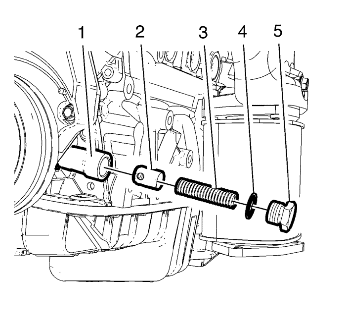

Sustitución de la válvula de descarga de presión de aceite
Procedimiento de desmontaje
- Retire el compresor del aire acondicionado y el soporte de la bomba de la servodirección. Consultar Desmontaje del compresor del aire acondicionado y del soporte de la bomba de la dirección asistida

- Retire el perno (5) con anillo de junta (4) de la carcasa de la bomba de aceite (1).
- Retire el muelle de la válvula de sobrepresión (3).
- Desmonte la válvula de sobrepresión de aceite (2).
Examen visual
Compruebe visualmente las piezas:
Nota: Compruebe si hay retenciones.
| • | válvula de sobrepresión de aceite |
Procedimiento de montaje
Precaución:Consulte Precaución con las fijaciones en la sección Prólogo.
Nota: Cubra con aceite de motor.
- Monte la válvula de sobrepresión de aceite (2) y el muelle de la válvula de sobrepresión de aceite (3).
- Utilice un anillo de junta NUEVO (4).
- Monte el perno (5) en la carcasa de la bomba de aceite (1) y apriételo a 50 N·m (37 lib. pie)
- Monte el compresor del aire acondicionado y el soporte de la bomba de la servodirección. Consultar Desmontaje del compresor del aire acondicionado y del soporte de la bomba de la dirección asistida
| © Copyright Chevrolet. All rights reserved |